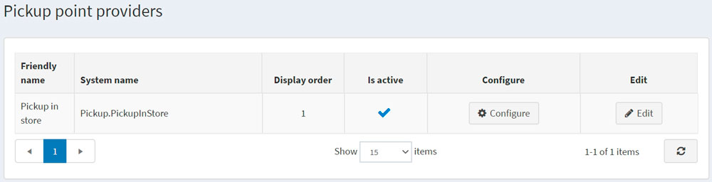
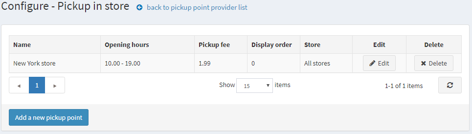
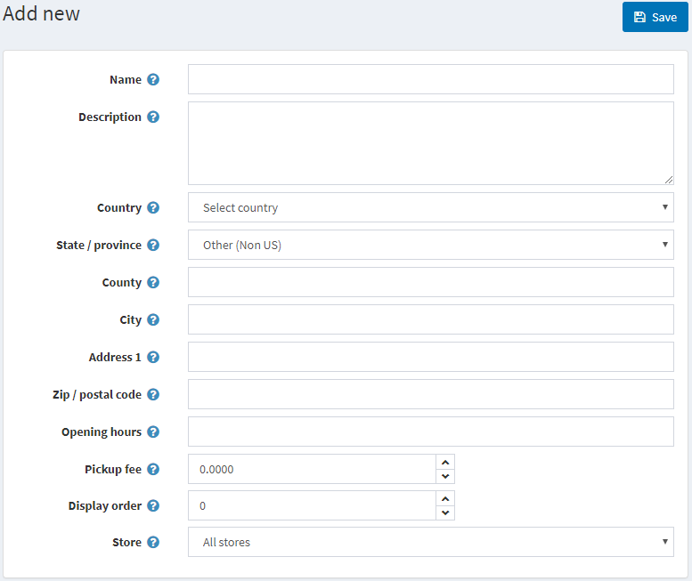

取貨點
取貨點是一個提供顧客靈活選擇包裹接收地點的選項。
Note
此選項僅在運送設定頁面（設定 → 設定 → 運送設定）中勾選了 「店內取貨」已啟用 核取方塊時才可用。
若要管理取貨點提供者：
前往 設定 → 運送 → 取貨點；系統將會顯示 取貨點提供者 頁面：

預設情況下，僅有一個 店內取貨 選項可用。請確保取貨點提供者處於啟用狀態。如果不是，請點擊 編輯 按鈕，並勾選 已啟用 欄位中的核取方塊。接著點擊 更新 按鈕以儲存變更。
若要編輯現有的取貨點或新增取貨點，請點擊表格中的 設定。系統將會開啟 設定 - 店內取貨 頁面：

點擊 新增取貨點；系統將會顯示 新增 視窗：

定義下列詳細資訊：
- 取貨點的 名稱。
- 如有需要，請填寫 說明。
- 從下拉式選單中選擇 國家。
- 從下拉式選單中選擇 州/省。
- 城市。
- 地址 1。
- 郵遞區號。
- 取貨點的 營業時間。
- 如有需要，請填寫 取貨費用。
- 此取貨點的 顯示順序。
- 使用此取貨點的 商店。
儲存 變更。
點擊取貨點旁邊的 編輯，即可編輯先前輸入的詳細資訊。